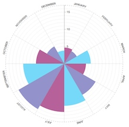
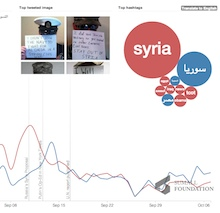
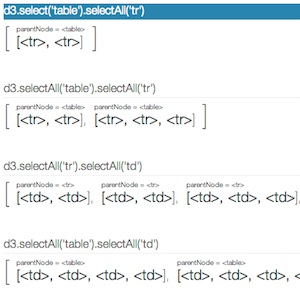
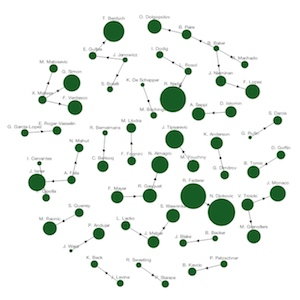
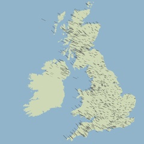
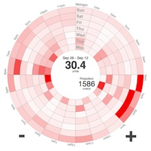

I design and build web applications.
I use JavaScript, Python, WordPress, HTML, CSS, jQuery, D3 and more.
Available for hire.
Some things I've made recently...

Radial bar chart reusable D3 component

Crisis visualisation
Crisis visualisation

Understanding D3 selections

10 different visualisations of Wimbledon 2012.

10 different visualisations of Wimbledon 2012.
A binary tree with a degree of geometric randomness. The user can regenerate the tree and hovering over a branch highlights the path back to the root.
Built with
D3.

A visualisation of wind in the UK using animation to depict the strength and direction of the wind.
Made with D3.
More

An interactive visualisation of my energy consumption.
Made with D3.
More
I've worked with...
I like to use...
JavaScript,
jQuery,
D3,
HTML5,
CSS3,
Python,
WordPress and others
Tutorials and talks
Slides from my How to Build a WordPress Plugin talk given at WordUp Brighton
Slides from my Beyond the Bar Chart talk given at Nerd Nite Brighton
An interactive explanation of D3 selections
Building Data Visualisations with D3 One Day Workshop
Slides from my talk at the London D3 Meetup (June 2013) '10 Views of a Single Dataset'
Slides from my Async talk 'D3.js - Data Visualisation in the Browser'
Projects
Circular heat chart component for D3.js
ChartMe WordPress plugin for Google Chart Tools
Blog
Creative data visualisation: a structured approach
Building Data Visualisations with D3 One Day Workshop
Making the UK animated wind chart
What goes into a data visualisation?
Data visualisation of UK temperature
Data visualisation of UK rainfall
Circular heat chart component for D3.js
Energy data visualisation using D3.js
Visualising event attendance using D3.js